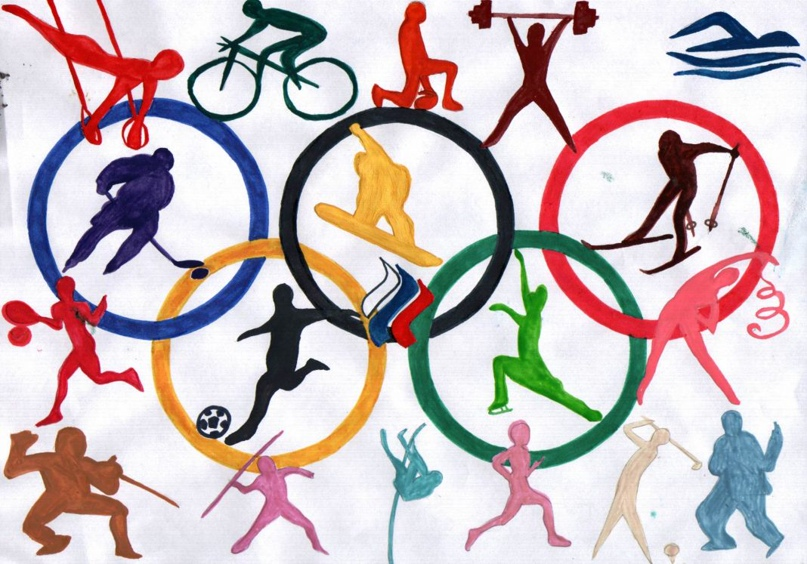
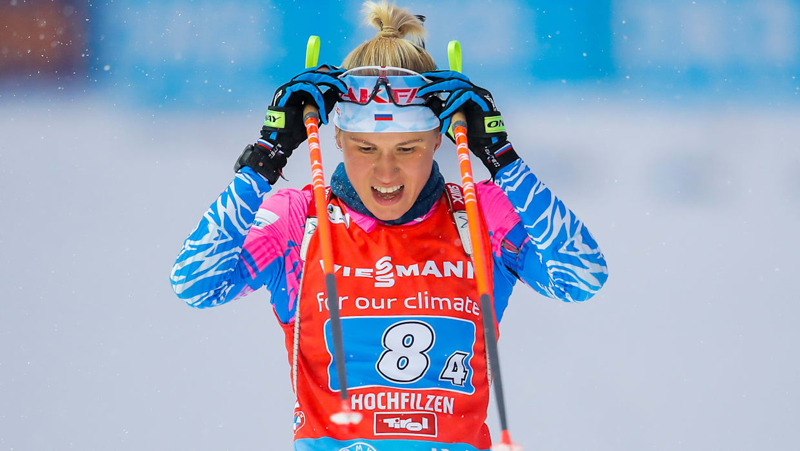
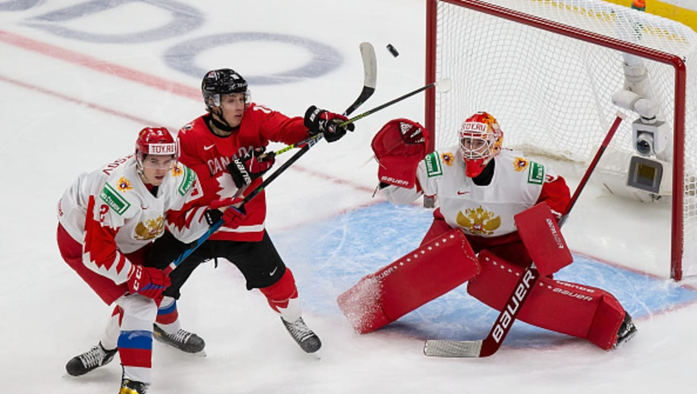
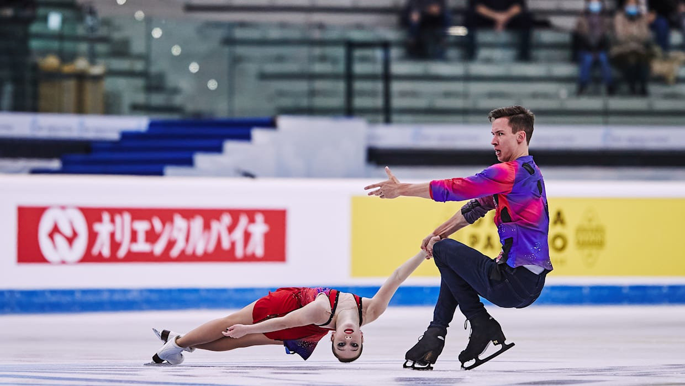
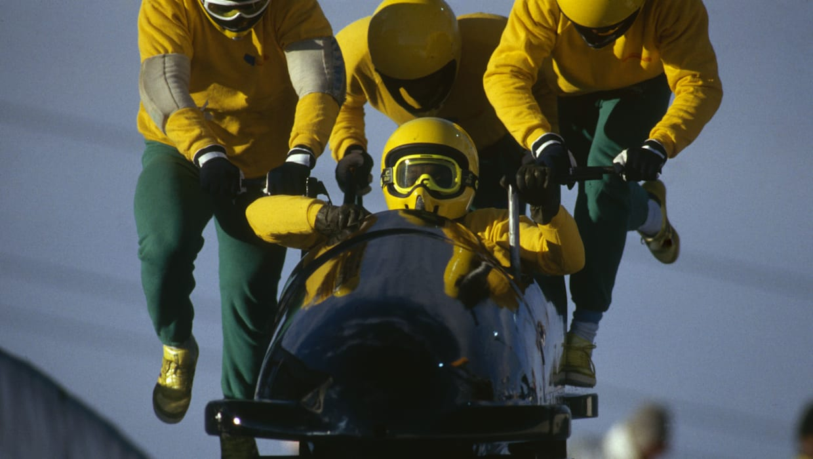

Зимние виды спорта:
Олимпийские виды спорта
 В программу современных Олимпийских игр входят 28 летних (42 дисциплины) и 7 зимних (15 дисциплин) видов спорта. При классификации видов спорта МОК следуют принципу «одна федерация — один вид спорта».
Биатлон
 Биатлон сочетает энергию и скорость лыжных гонок c точностью и сосредоточенностью стрельбы из винтовки. Греческое слово "биатлон" означает соревнование в двух видах спорта. Сегодня под ним понимают комбинацию лыжных гонок и пулевой стрельбы. Исторически биатлон происходит из Скандинавии, где охотники выходили в заснеженные леса на лыжах с ружьем за спиной. В 1948 году с целью стандартизировать правила был основан Международный союз по современному пятиборью и биатлону (UIPMB). В 1993 году в структуре UIPMB появился Международный союз биатлонистов (IBU). Через пять лет он стал самостоятельной организацией. Соревнования, отдаленно напоминавшие биатлон, проводили в Скандинавии еще в XVIII веке. Первое соревнование по современному биатлону скорее всего прошло в 1912 году в Осло среди военнослужащих. Изначально в программу ежегодных состязаний входила лыжная гонка на 17 километров с двухминутными штрафами за промахи на огневых рубежах. В 1924 году в Шамони состоялся олимпийский дебют биатлона в виде соревнований для военных патрулей. В 1928, 1936 и 1948 годах биатлон был представлен на Олимпиадах в качестве показательных соревнований, а в нынешней форме дебютировал на Играх в 1960 году в Скво-Вэлли. Первые женские гонки были включены в олимпийскую программу в Альбервиле-1992. До Инсбрука-1976 олимпийская программа состояла из индивидуальной гонки и эстафеты. В Лейк-Плэсиде-1980 добавили вторую индивидуальную гонку. В Солт-Лейк-Сити-2002 к олимпийской программе добавили гонки преследования - на 12,5 км у мужчин и 10 км у женщин. С Турина-2006 проводятся мужской и женский масс-старты, где участвуют 30 лучших спортсменов в рейтинге Кубка мира.
хоккей
 Хоккей с шайбой – захватывающий и динамичный командный вид спорта. Драматичные и напряженные матчи на Олимпийских играх привлекают огромную аудиторию. Хоккей с шайбой появился в начале XIX века в Канаде. В Европе в похожие игры играли еще раньше. Само название происходит от французского hocquet, означающего посох. Примерно в 1860 году мяч заменили на шайбу, а в 1879-м два студента Университета Макгилл – Робертсон и Смит – написали первые правила. Первая в истории команда возникла в 1880 году и называлась «Хоккейный клуб Университета Макгилл». Вскоре хоккей распространился по всей Канаде и стал национальным видом спорта. В 1892 году генерал-губернатор страны учредил приз – Кубок Стэнли. Его первым обладателем стала команда «Монреаль ААА» (Montreal Amateur Athletic Association). В конце XIX века игра добралась до США. В 1895 году состоялись матчи между командами Йельского университета и Университета Джонса Хопкинса. На рубеже веков хоккей с шайбой стал известен в Европе. Олимпийский дебют этого вида спорта, как ни удивительно, состоялся на летней Олимпиаде 1920 года в Антверпене. Начиная с первых зимних Игр 1924 года в Шамони мужской хоккей с шайбой входил в программы всех зимних Олимпиад. Женский хоккей получил статус олимпийского вида спорта в 1992 году, а его олимпийский дебют состоялся в 1998-м в Нагано. Неудивительно, что на первых порах в хоккее доминировала Канада. Однако в 1956 году и вплоть до распада СССР пальму первенства перехватила советская сборная. В этот период команда СССР не взяла только два золота: на Играх-1960 в Скво-Вэлли и в 1980-м в Лейк-Плэсиде, где сборная США сотворила знаменитое «чудо на льду».
Фигурное катание
 Фигурное катание проделало долгий путь – от практичного способа передвигаться по льду до элегантного сочетания искусства и спорта. Первыми коньки полюбили голландцы. Еще в XIII веке они добирались из деревни в деревню по замерзшим каналам. Со временем катание проникло в Англию, где открылись первые клубы и искусственные катки. Кататься на коньках любили короли Англии, Мария-Антуанетта, Наполеон III и Иоганн Гёте. Серьезным переменам в фигурном катании мы обязаны двум американцам. В 1850 Эдвард Бушнелл из Филадельфии ввел в обиход коньки со стальными лезвиями, благодаря чему стали возможны сложные фигуры и повороты. Живший в 1860-х в Вене балетмейстер Джексон Хейнс придал катанию изящество тем, что привнес в него элементы балета и танца. Фигурное катание – самый старый вид спорта в программе зимней Олимпиады. Первые олимпийские соревнования состоялись еще в 1908 году в Лондоне, после чего снова прошли в 1920 году в Антверпене. До 1972 года медали разыгрывались среди мужчин, женщин и в парном катании. В 1976-м программу дополнили танцы на льду, которые быстро завоевали популярность. На момент олимпийского дебюта в Шамони-1924 Соне Хени было всего 11 лет. Норвежка так нервничала, что во время выступления спрашивала тренера, что ей делать. Тем не менее она выиграла золото трех подряд зимних Олимпиад и обрела армию поклонников. Хени стала киноактрисой и существенно повысила популярность фигурного катания.
бобслей
 Бобслей – зимний вид спорта, которые изобрели швейцарцы в 60-х годах XIX века. Экипаж на управляемых санях осуществляет скоростной спуск по узкой извилистой ледяной трассе с высокими бортами. Как самостоятельный вид спорта бобслей появился в конце XIX века, когда швейцарцы скрепили две пары саней и добавили рулевой механизм. Чтобы обезопасить богатых туристов, сани оборудовали рамой. В 1897 году в Санкт-Морице появился первый бобслейный клуб. К 50-м годам XX века стало понятно, как важен стартовый разгон, и в бобслей потянулись представители силовых видов спорта. В 1952 году в правилах ограничили максимальный вес экипажа, завершив эру супертяжелых бобслеистов. Бобслей вновь стал атлетичным. Изначально на соревнованиях использовались сани с деревянными полозьями, но очень скоро их заменили на металлические. Сам вид спорта получил название от английских «bob» (раскачиваться взад-вперед, как делали спортсмены перед стартом) и «sleigh» (сани). Сегодня лучшие бобслеисты тренируются круглый год и соревнуются преимущественно на искусственных трассах, а современные бобы – это высокотехнологичный инвентарь из стекловолокна и металла. В 1924 году на первых зимних Олимпийских играх в Шамони провели мужские соревнования в бобах-четверках. В программу Лейк-Плэсида-1932 добавили мужские двойки, и эти две дисциплины остались до сегодняшнего дня. Женский бобслей впервые попал в олимпийскую программу в 2002 году. У женщин разыгрывается один комплект наград – в двойках. На зимних юношеских Олимпийских играх в Лиллехаммере в 2016 году дебютировала дисциплина монобоб. В новом индивидуальном виде спортсмены используют одинаковые бобы, что выводит на первый план навыки управления, а не ценность оборудования. Женские соревнования на монобобах включены в программу Олимпиады-2022 в Пекине.

Наверх
Telegram